Using Musical Scales to Build Harmonious Typography
Musical Intervals & Math
Every Note
Is a Number

Every Note
Is a Number
Every musical note is a number: a frequency vibrating a certain number of times per second (measured in hertz).
Every Octave
Increases 2×
| Concert A = 440Hz | A5 = 880Hz |
|---|---|
| Middle C ~= 131Hz | C4 ~=262Hz |
 
Every Fifth
Increases ~1.5×
| A3 = 220Hz | E4 ~=330Hz |
|---|---|

Every Half-Step Increases 1.0595×
Every half-step (the building block of Western scales) is a 1.0595× increase.
All other intervals work as exponents of the half-step interval.
- A (440Hz) × 1.0595 = A# (466.16Hz) × 1.0595 = B (493.88Hz)
- A (440Hz) × 1.05592 = B (493.88Hz)
Typography & Modular Scales
Modular Scales
in Sass
Literal
Modular Scales
- Every interval is the same
- A musical half-step scale is literally modular ~play half-step scale~
- A musical whole-step scale is literally modular ~play whole-step scale~
Non-literal / quasi-modular scales
- Major & minor scales are created by alternating whole- & half-step scales (WWHWWWH) / (WHWWHWW)
- These patterns repeat every octave, creating a non-literal / organic modular scale.
Non-literal / quasi-modular scales
ALA article above briefly discusses a “double-stranded modular scale” which also avoids the single increment limit of literal modular scales, but is less adjustable than music-based type scales.
See & Hear
Interval: Octave
Notes Are Numbers
Every musical note is a number: a frequency vibrating a certain number of times per second (measured in hertz).
Interval: Fifth
Notes Are Numbers
Every musical note is a number: a frequency vibrating a certain number of times per second (measured in hertz).
Interval: Major Third
Notes Are Numbers
Every musical note is a number: a frequency vibrating a certain number of times per second (measured in hertz).
Scale: Major Scale
Heading 1
Heading 2
Heading 3
Heading 4
Blockquote
Paragraph
Scale: Pentatonic
Heading 1
Heading 2
Heading 3
Blockquote
Paragraph
Scale: Major Triad
Heading 1
Heading 2
Blockquote
Paragraph
Responsive musical scales
- By decreasing the number of notes per octave, you can increase font sizes more quickly, taking advantage of larger screens.
- By increasing the number of notes per octave, you can slow the growth of font sizes, keeping content visible on small screens.
Intro to TypeTuner
TypeTuner
Point audience to my TypeTuner library & quickly overview public functions/mixins